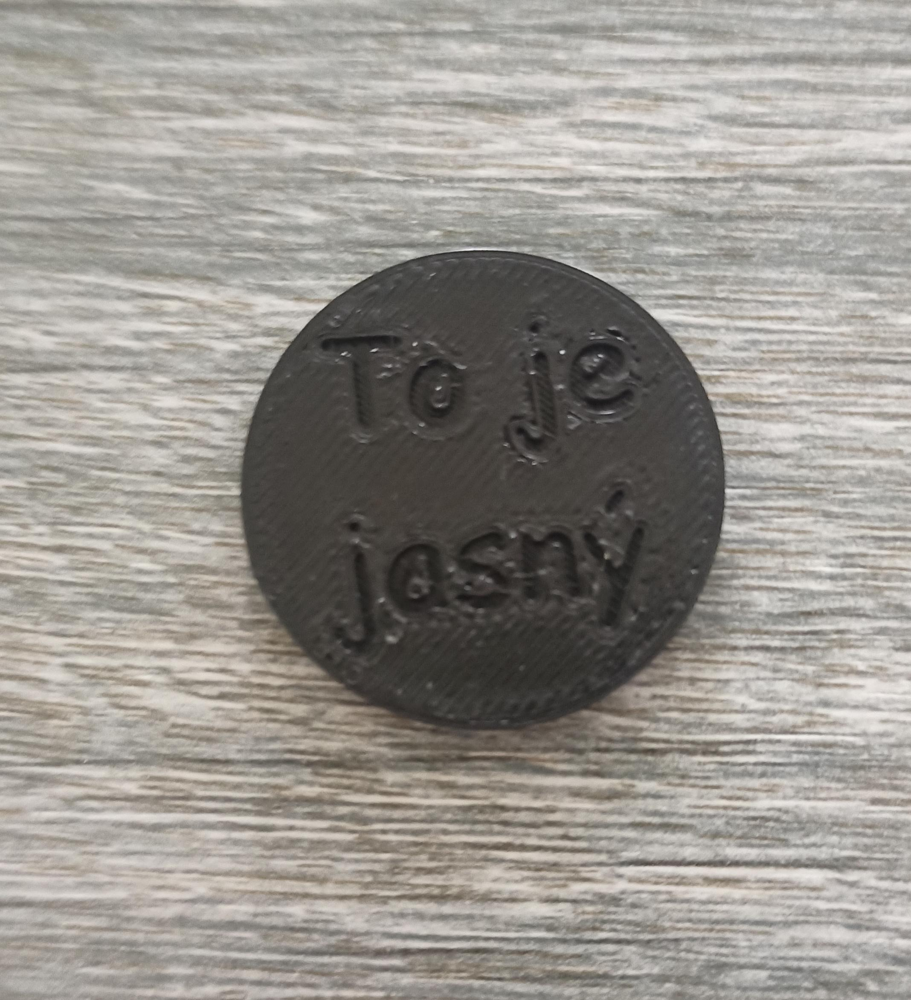

Home
Lounský šilink
Lounský šilink je oficiální měna uliček v Louny townu. Jeho ražení začalo v roce 2018 a do dnes se hojně využívá. Získat ho je možné pouze u
dealerů
. Aktuální kurz je 1 šilink = 5czk.
